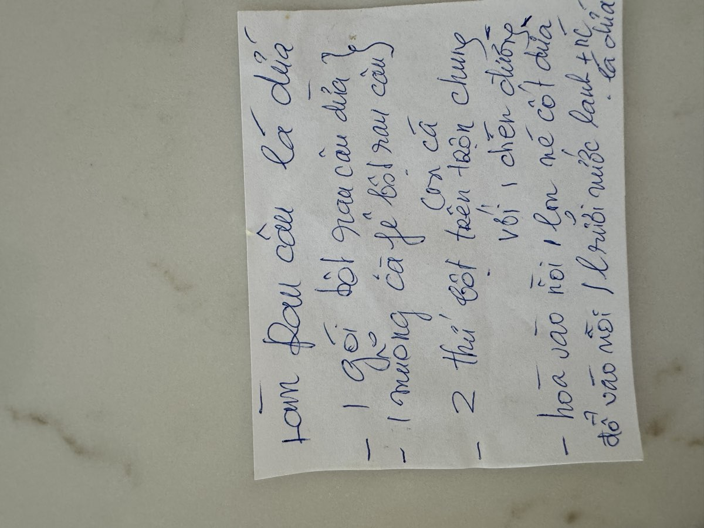

← Back to recipes
Rau Câu Lá Dứa
Pandan Jelly
From Mẹ — Oanh
Nguyên liệu · Ingredients
- 1 packet pandan jelly powder (bột rau câu lá dứa)
- 1 teaspoon agar powder (bột rau câu)
- 1 cup sugar
- 1 can (13.5 oz) coconut cream
- 1.5 liters cold water
- 5–6 pandan leaves (lá dứa), washed and tied in a knot
- Pinch of salt
Cách làm · Instructions
- In a small bowl, mix the pandan jelly powder and agar powder together with about ¼ cup of the cold water. Stir to form a smooth paste — this prevents lumps later. Set aside.
- In a large pot, combine the remaining cold water with the pandan leaves. Bring to a boil and let the leaves infuse for 5 minutes.
- Remove the pandan leaves. Add the powder mixture to the pot, stirring constantly. Add the sugar and a pinch of salt. Keep stirring until everything is completely dissolved and the mixture comes to a full boil.
- Pour in the coconut cream and stir well to combine. Let it return to a gentle boil for 1–2 minutes. The coconut cream makes the jelly richer and gives it a beautiful, creamy quality.
- Remove from heat. Pour the mixture through a fine strainer into your mold or glass dish — straining catches any undissolved bits and gives you a perfectly smooth jelly.
- Let it cool to room temperature, then refrigerate for at least 2–3 hours until completely set. The jelly should be firm but still have a delicate wobble when you shake the mold.
- To unmold, run a thin knife around the edges and flip onto a serving plate. Cut into squares, diamonds, or any shape you like.
Công thức gốc · Original handwritten recipe

❦
A recipe from Mẹ's kitchen